Bhassa Toyota
Modernizing a brand with almost four decades in the city — without losing the symbol that made it recognizable.
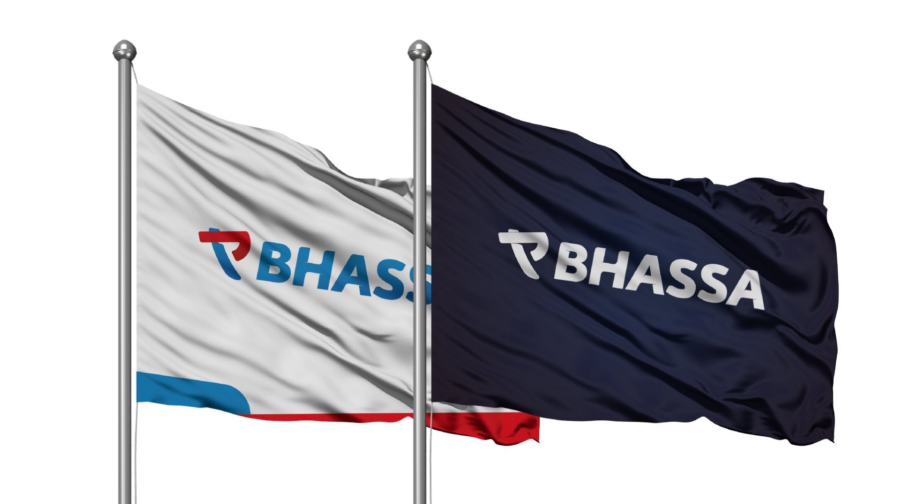
La Pampa · Buenos Aires
Production coordination · at pastafro.la
Rebranding 2022
360 system, physical + digital
Bhassa is the face of Toyota in the center of the country: three dealerships in three cities. They had something almost no client has — a beloved, inherited symbol, recognized by the whole community.
And for that very reason, they didn't want to touch anything. For years, a rebrand was off the table: the risk of losing hard-won recognition outweighed the need to update. The problem wasn't an ugly brand. It was a brand falling behind in the digital era and afraid to move.
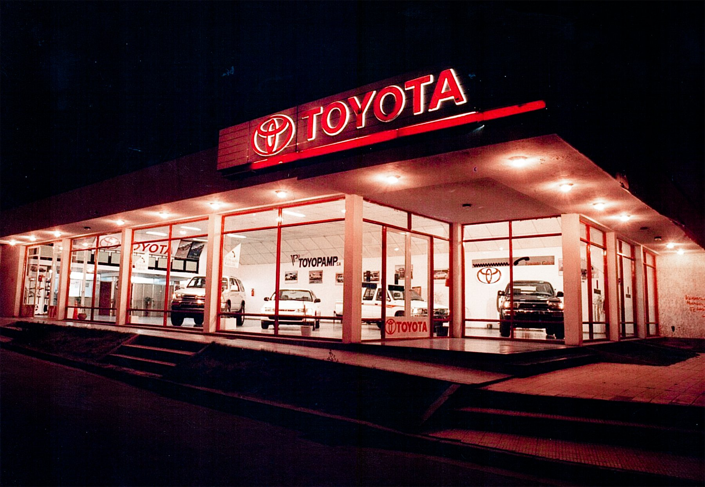
We weren't hired to rebrand. We came in in 2015 as content creators, and it took us five years of trust to reach the point where the client was willing to listen.
The opportunity came with the opening of a new branch. But it came with a non-negotiable condition: the shape of the isologotype is not touched. That silhouette —the combination of the T and the P of ToyoPamp— was a family inheritance, not a design decision.
That was the real challenge. Not discarding the symbol, but redrawing its lines: modernizing the stroke, refining the geometry and giving it back its relevance without anyone in the city ceasing to recognize it. Respect the shape in order to change everything else.
A single flat color, lowercase initials and a stroke designed for 1990s printed signage. Recognizable in the city, illegible on a small screen.
The same silhouette, with refined geometry, two tones, capitals and a 9° slant. Nobody in the city stopped recognizing it.
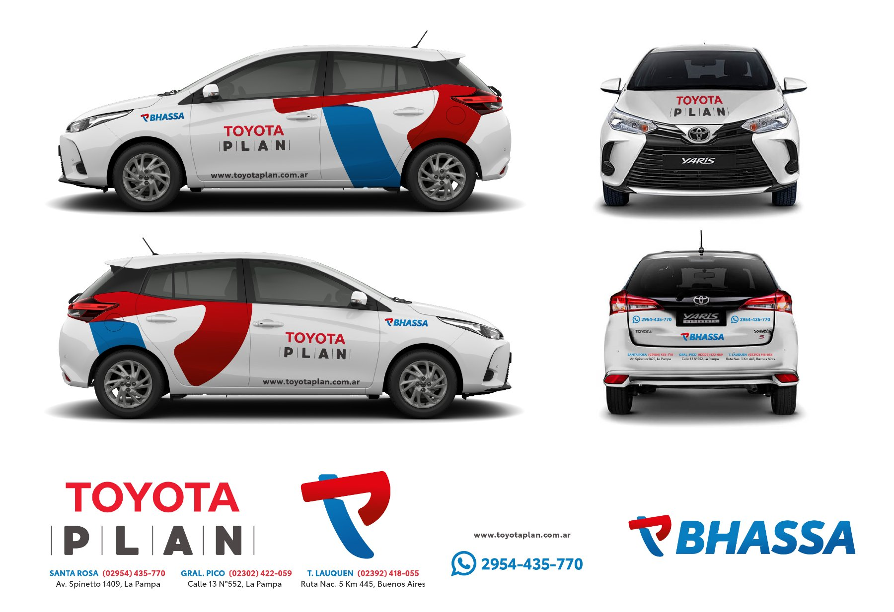
It wasn't signage. It was designing an entire establishment.
I coordinated the design and fit-out of all the pieces that now make up the place: wraps, murals, decorative lighting, interior signage, full set dressing of the office area and a living green wall in the showroom.
All of this predates the rebrand: it was done with the previous identity, the one you see in these photos. It was the project that finished building the trust that, years later, made it possible to sit down and discuss the brand.

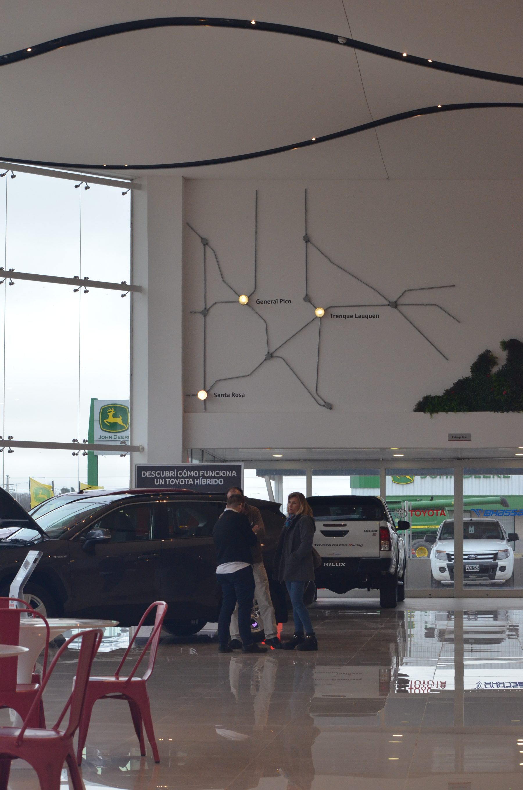
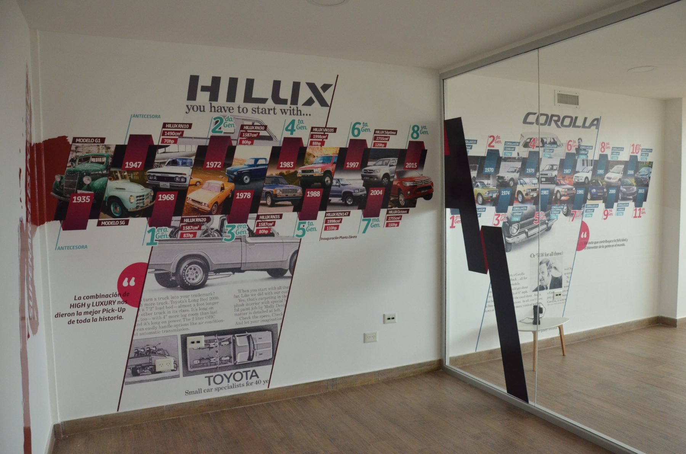
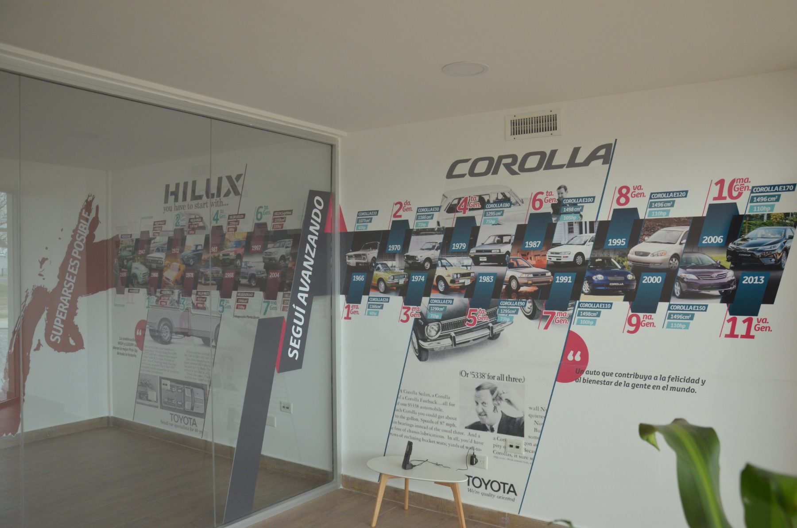
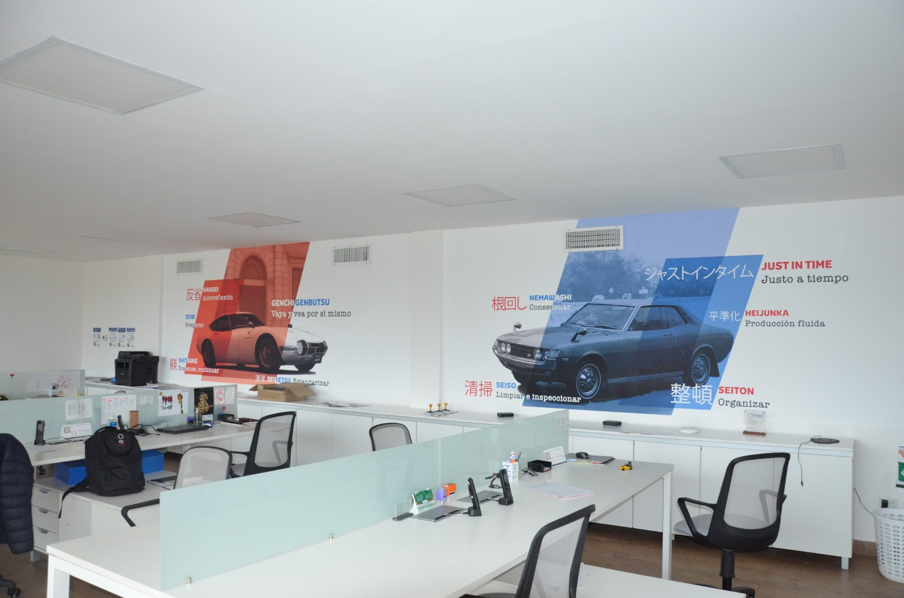
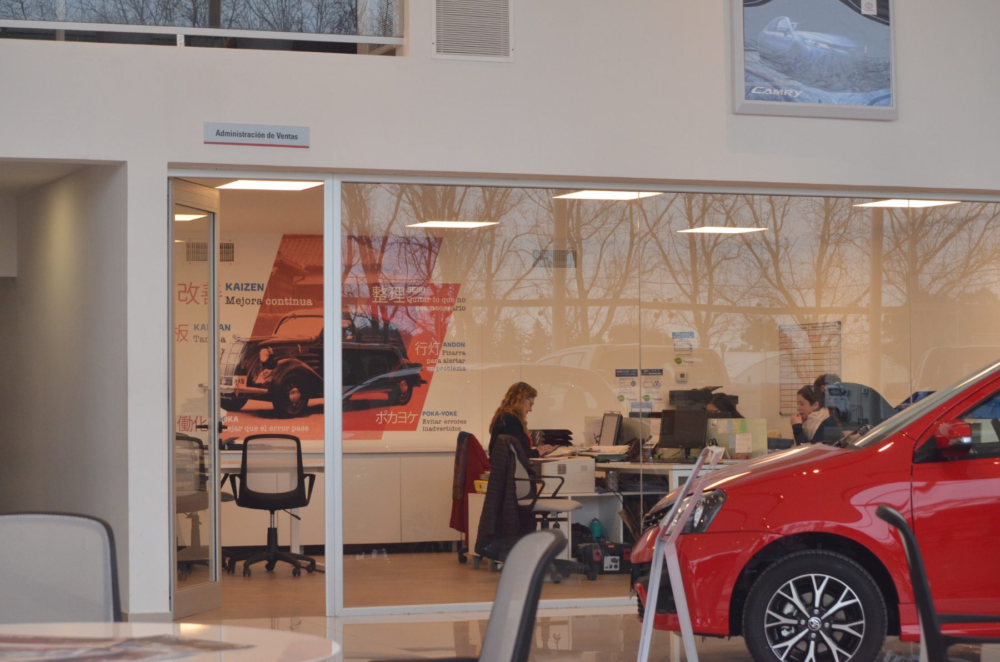
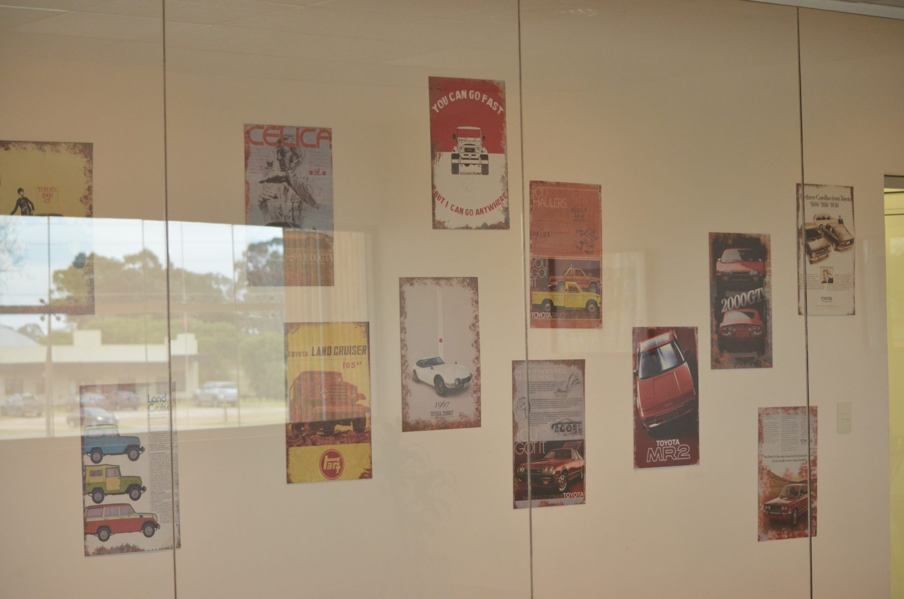
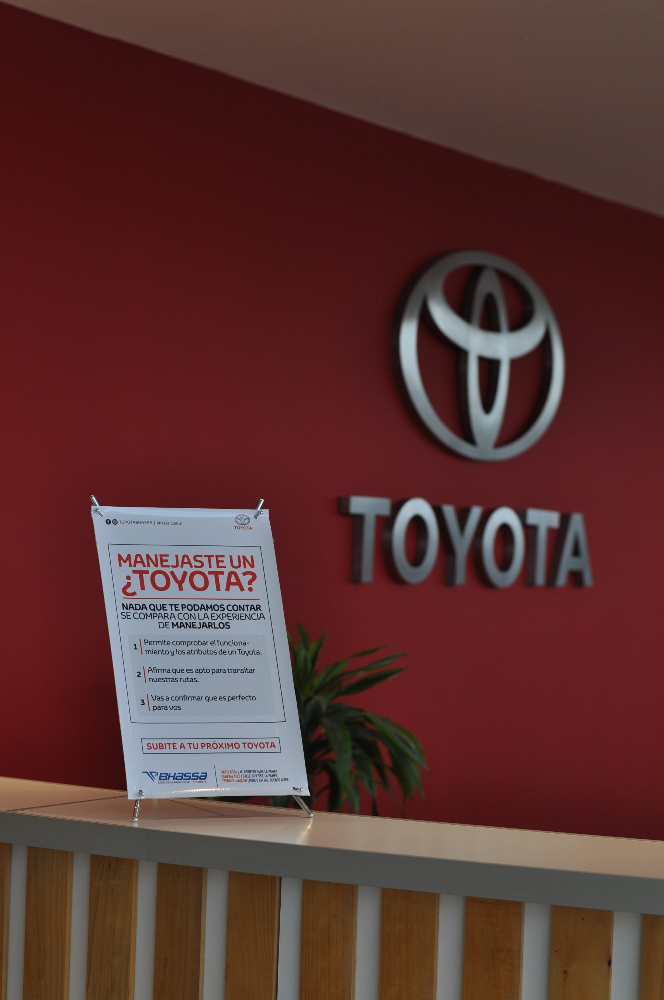
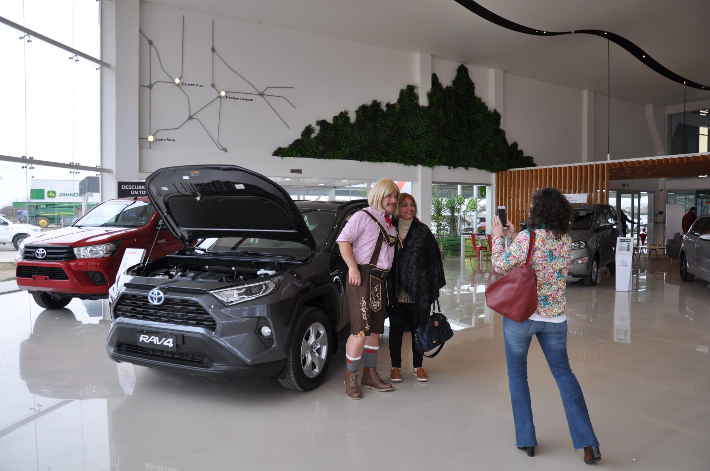
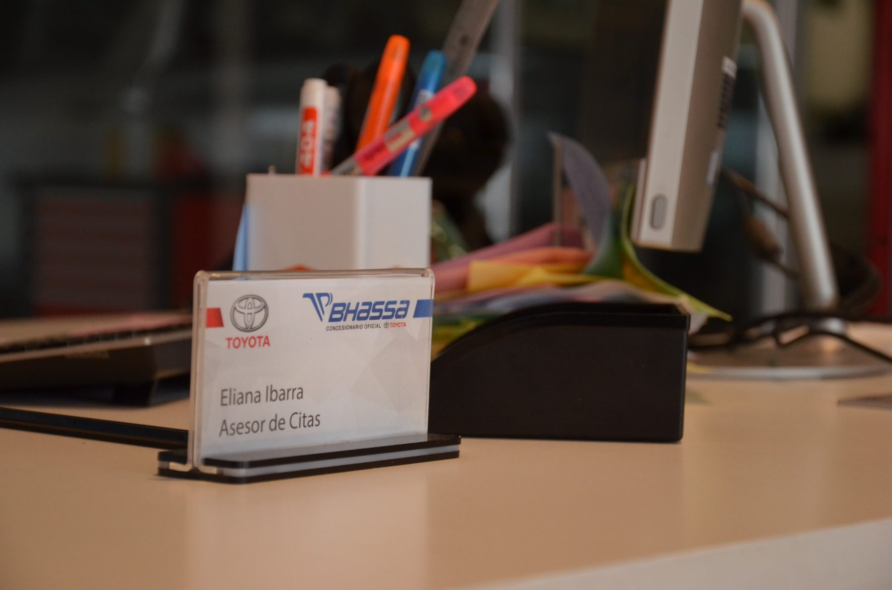
The transition played out in the street.
Right after the rebrand closed came a kermesse for the 30th anniversary where both logotypes still coexisted — but the shift in aesthetics was already visible in every piece.
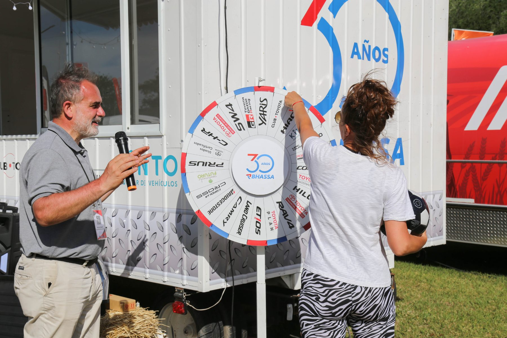
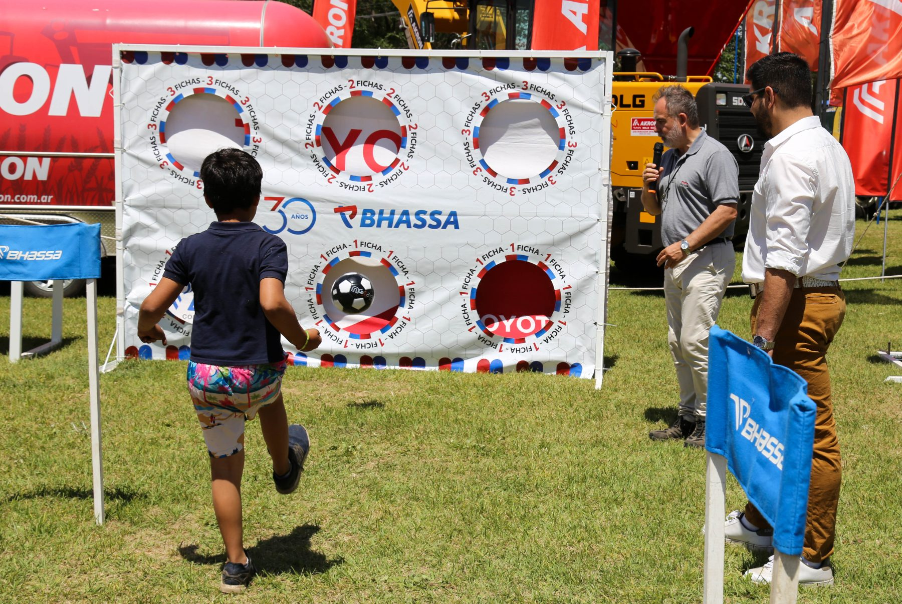
Instant adoption, inside and out. Zero resistance, apart from respecting the inherited silhouette.
The owners, who doubted the change, ended up embracing it. Convincing the one who doubts is worth more than a client who already wanted to move.
The system survived Toyota's centralization. What we custom-designed stayed alive even when the global brand standardized everything else.
The team made it their own. Today, seen from the outside, the brand is used in all its splendor — with more interaction and new pieces that no longer go through me.
The system was replicated in new branches and business units, and some pieces are still in use years later.
Nine years as creative partner of the group. Not a commission: a relationship.
I learned to manage a brand completely, from every angle.
It took me to a level I hadn't valued until I saw it from the outside. It powered everything that came after.
Do you have a brand with years behind it that needs updating without losing what made it recognizable?
That's what we did here: modernize the complete system —from the isologotype to signage, from fleet wraps to the physical space— while respecting the symbol the community already recognized.